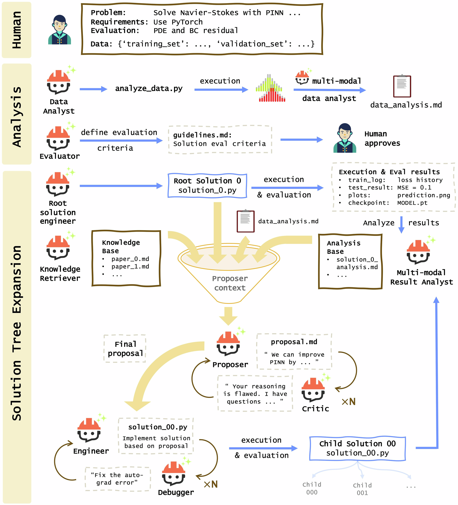

AgenticSciML：面向科学机器学习涌现式发现的协作多智能体系统
AgenticSciML: collaborative multi-agent systems for emergent discovery in scientific machine learning
npj Artificial Intelligence
摘要解读已完成，全文待补充
本文提出AgenticSciML，将基于大语言模型的多智能体协作、方法检索与演化评估结合，用于开发面向物理信息学习和算子学习问题的科学机器学习模型。[摘要]解读：其关注点是模型开发过程的智能化，而非已获证实的工程设计优化。摘要未披露实验设置、性能指标或发现实例，因此只能识别方法框架与应用范围，不能判断效果优劣。本导读仅依据公开元数据与摘要，未阅读全文。

查看大图图解：从问题定义、数据分析和评价规则出发，提案、批评、编程与调试智能体协同迭代；执行结果回流分析库，支撑下一轮方案改进。
Qile Jiang & George Karniadakis
原文图页 · CC BY-NC-ND 4.0
原图未改动，中文图解由本站整理。
依据公开摘要整理，未核验全文细节。解读与建议不代表作者结论。 论文依据 1
中文导读
本文提出AgenticSciML，将基于大语言模型的多智能体协作、方法检索与演化评估结合，用于开发面向物理信息学习和算子学习问题的科学机器学习模型。[摘要]解读：其关注点是模型开发过程的智能化，而非已获证实的工程设计优化。摘要未披露实验设置、性能指标或发现实例，因此只能识别方法框架与应用范围，不能判断效果优劣。本导读仅依据公开元数据与摘要，未阅读全文。
阅读建议建议作为科学机器学习自动化的方法线索阅读；摘要明确列出多智能体协作、方法检索与演化评估，但尚未体现与生成式结构设计的直接联系，不宜仅凭主题标签列为该方向的重点成果。[摘要]
- 研究问题
- 论文面向物理信息学习与算子学习中的科学机器学习模型开发，摘要将目标表述为“develop scientific machine learning models”。[摘要]解读：研究对象是模型开发过程，但具体针对哪些开发瓶颈、任务难度或人工成本，现有资料没有说明。
- 方法与路线
- 摘要明确列出“LLM-based multi-agent collaboration, method retrieval and evolutionary evaluation”，即基于大语言模型的多智能体协作、方法检索与演化评估。[摘要]三者用于模型开发，但如何衔接以及采用何种检索库、评价规则，均未披露。
- 创新与比较
- 解读：可关注的潜在创新是把协作、检索与演化评估组合用于科学机器学习模型开发，而不是仅让语言模型直接给出方案。[摘要]但摘要没有与已有系统比较，也未解释涌现式发现的判定标准，因此不能确认首创性、技术增量或自主发现能力。
- 证据与发现
- 摘要给出的信息是该系统用于“physics-informed and operator learning problems”，说明其目标覆盖物理信息学习与算子学习。[摘要]现有材料没有报告具体发现、基准成绩、成功率或资源消耗，因而不能将应用范围表述为性能提升或已验证的科学突破。
- 局限与边界
- 目前能确认的是证据披露不足，而非作者已经证明的系统缺陷：摘要没有任务清单、对照实验、消融分析和复现细节。[摘要]解读：这些缺项使协作机制的独立贡献、演化评估的可靠程度及跨任务适用性无法判断；不能据此断言方法实际无效或成本过高。
- 方向关联
- 解读：科学机器学习模型开发可能为智能运维中的物理约束建模、结构设计中的代理模型以及可靠性分析中的响应预测提供方法启发。[摘要]不过这些属于迁移设想，摘要未涉及设备数据、结构设计变量或失效概率，不能将其视为论文已完成的工程应用。
- 后续研究建议
- 建议：后续阅读全文时，优先核查智能体分工、检索来源、候选模型变化方式和评价预算，并查看是否设置单智能体与无检索对照。若拟迁移到结构设计，还应核查几何与物理约束的处理方式。上述均是待核查事项，不是摘要已报告的实验或作者结论。[摘要]